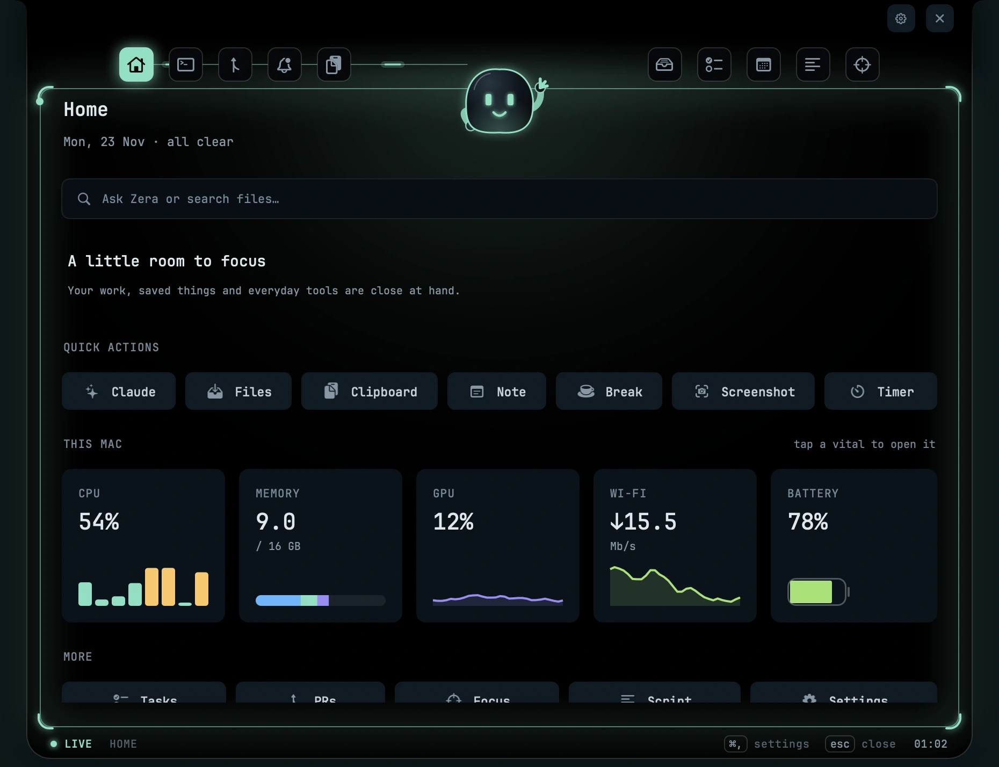
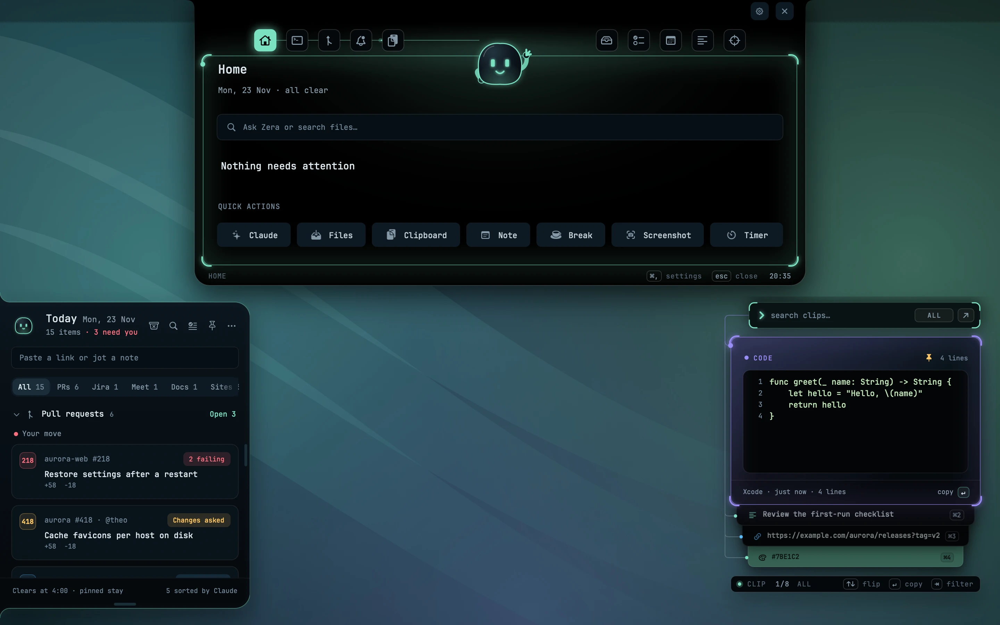

Zera
The notch, Daily Shelf, Clipboard deck, launcher and the Android receiver.
Download for MacmacOS 13+ · Apple silicon and Intel
Native for macOS · open source
Zera turns the notch into one calm place for Claude and Codex sessions, today’s links, your clipboard, files, tasks and focus. The desktop below is live. Click Zera and try it.
macOS 13+ · Apple silicon and Intel · free · MIT

A browser recreation of the native app with fictional data. Keys work once you click the desktop: ← → switch screens, 1–0 jump, esc closes.
When a session starts working, two wings slide out of the notch with what it is doing. When it needs a decision, the command is right there. Approve it, reject it, or reply when it is done.
LIVE · APPROVE OR REJECT THE COMMAND WHEN IT ASKS
Paste a pull request, a ticket, a doc or a note. Daily Shelf files the links it recognises and waits at the edge of your screen until you need them.
Try it: type github.com/you/repo/pull/12 or any note, then ↵. Nothing is fetched or stored.
LIVE · PASTE A LINK OR JOT A NOTE
Your Clipboard shortcut opens a deck of cards right where the pointer is. Colours fill the card, code sits in an editor frame, pictures cover it. Flip to the one you want and press Return.
Press ⌥ Space and type to find an app. Type > and the list turns into commands: Wallpaper, Theme, Lock, Sleep, Quit All, Kill Process, Kill Port and Zera’s own actions.
Try it: type a few letters, or > then wallpaper, a space and ← →. ↵ runs the choice.
The launcher’s flow is inspired by Caelestia shell for Hyprland, rebuilt natively for macOS in Zera’s Signal style. Zera uses none of its code.
LIVE · TYPE > FOR COMMANDS
Every tile on the rail is a screen. Pick one and it opens in the live notch above.

The real thing: a native capture of the app with sample data. Get the Tidal wallpaper ↓
Glide a photo off the edge of your phone in Androp and it arrives on the Mac as the original. Documents drop into the notch, where a liquid receipt fills as the bytes arrive, then wait on the Shelf.
Wi-Fi at home, or your phone’s hotspot outside.
Turn on receiving under Extras → Android sharing, then enter the code in Androp.
From Androp’s gallery or Files tab, or Share → Androp in another app.
Zera has no telemetry service and no account. Integrations are opt-in, and each one is listed in the privacy data map.
Clipboard history, tasks, timesheets, notes and shelf references.
Integration tokens. Nothing is written to plain files.
A file is sent to your chosen provider when you ask about it. Optional link sorting sends URLs and titles only.
Dictation with Murmur runs on a local Whisper model after a one-time download.
The notch, Daily Shelf, Clipboard deck, launcher and the Android receiver.
Download for MacmacOS 13+ · Apple silicon and Intel
Send original files to your Mac and review Claude Code requests from your phone or paired Wear OS watch.
Download the APKAndroid 8+ · direct APK · debug-signed build
Open the DMG and drag Zera to Applications. For a build without notarization, macOS asks you to allow it under Privacy & Security → Open Anyway. Install and update guide ↗
$ git clone https://github.com/amsynist/zera.git $ cd zera $ ./build.sh # Swift, AppKit and SwiftUI. No Xcode project needed. $ open dist/Zera.app
Zera uses the centre of the menu bar. The same screens and tools are there.
Managed sessions that Zera starts accept replies and approvals. Chats it only observes on the desktop are read-only. It uses the tools and logins you already have.
No. It is a browser recreation with fictional data so you can try the feel of it. The native capture and the films show the real app, also with sample data.
No. Phone and Mac need the same local Wi-Fi or a phone hotspot. There is no cloud relay and no Bluetooth transport. Transfers are paired and unencrypted, so use a network you trust.
Enable receiving in Zera’s Extras, choose Show pairing QR, then tap Scan pairing QR in Zera X. Older APKs can enter the Mac’s local IP address and pairing code manually. Claude approvals use a separate QR under Zera X approvals.
Yes. The code is MIT licensed. Zera’s original artwork has separate terms.